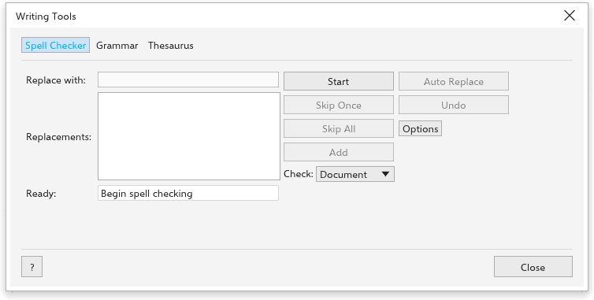

Ferramentas de escrita
O TraceDraw verifica ortografia e gramática, encontra sinônimos, corrige enquanto você digita e conserta textos que chegaram com caracteres errados. Os comandos ficam em Texto > Ferramentas de escrita e no menu Texto.
A caixa de diálogo Ferramentas de escrita
Texto > Ferramentas de escrita > Verificação ortográfica, Gramática e Dicionário de sinônimos abrem a caixa de diálogo Ferramentas de escrita nessa guia. Verificar escolhe se verifica todo texto da página (Documento) ou só os textos selecionados (Seleção).

Verificador ortográfico
- Clique em Iniciar. A primeira palavra não encontrada aparece, com sugestões em Substituições.
- Clique em uma sugestão para colocá-la em Substituir por (clique duplo para substituir de uma vez), ou digite a palavra certa.
- Clique em Substituir para este lugar, Substituir sempre para todos os lugares, Ignorar uma vez ou Ignorar todas para deixá-la, ou Adicionar para acrescentá-la à sua lista de palavras.
- Desfazer desfaz a última substituição.
Opções tem Ignorar palavras com números, Ignorar palavras em maiúsculas e Add corrections to Autocorrect.
Dicionários
O TraceDraw verifica a ortografia com dicionários Hunspell: para cada idioma, um arquivo .dic e um arquivo .aff com o mesmo nome, como pt_BR.dic e pt_BR.aff. Dicionários gratuitos para a maioria dos idiomas podem ser baixados dos projetos que os fazem; outros programas costumam instalá-los também.
- Abra Ferramentas > Opções > Texto > Spelling.
- Clique em Open Folder e copie os arquivos
.dice.affpara essa pasta (pastas dentro dela também servem), ou indique uma pasta que já tenha dicionários em Also read dictionaries from. - Clique em Read Again. A lista Dictionaries mostra cada um; desmarque a caixa para deixar de usá-lo.
Uma palavra está certa quando algum dicionário em uso a conhece. Os dicionários instalados no sistema também são usados. Sem nenhum, só uma lista de palavras incluída é usada.
Dicionários de hifenização (arquivos hyph_, como hyph_pt_BR.dic) vão nas mesmas pastas. Escolha um em Texto > Paragraph Text > Hyphenation patterns para hifenizar texto nesse idioma.
Gramática
O verificador gramatical encontra palavras repetidas, espaços duplos, espaços antes da pontuação, falta de espaço depois dela, frases que começam com minúscula, parênteses e aspas sem par, pontuação repetida, frases com mais de 40 palavras, falta de ponto final e, em inglês, "a" e "an" antes do som errado. Para cada ocorrência, mostra a substituição, a Nova frase e o Nome da regra. Clique em Iniciar (depois Substituir), Ignorar uma vez ou Ignorar regra.
Dicionário de sinônimos
Digite uma palavra (de início, a primeira palavra do texto selecionado) e clique em Procurar. Os significados aparecem com os sinônimos: clique em um para escolhê-lo, clique duas vezes para procurá-lo. Inserir o coloca no texto, mantendo as maiúsculas. Em Opções, Fechar depois de inserir fecha a caixa de diálogo depois de inserir, e Escolher arquivo de sinônimos usa um arquivo de sinônimos que você tenha.
Correção automática
Texto > Ferramentas de escrita > Correção automática abre a aba Correção automática de Ferramentas > Opções > Texto, que define o que é corrigido enquanto você digita:
- Iniciar frases com letra maiúscula;
- Corrigir duas maiúsculas iniciais ("THe" vira "The");
- Capitalize names of days ("monday" vira "Monday");
- Automatically create hyperlinks when typing web addresses: digitar
www.exemplo.comou um endereço que começa comhttp://ouhttps://dá esse hiperlink ao objeto de texto, se ele ainda não tiver um; - Language o idioma cujas aspas são usadas (o idioma da interface, a menos que você escolha outro);
- Usar aspas tipográficas e Use straight quotation marks after numbers (e.g. 6');
- Single quotes e Double quotes: as aspas de Open e Close, se você quiser outras que não as do idioma;
- a Tabela de substituições, usada quando Replace text while typing está ligado:
(c)vira ©,(r)®,(tm)™,1/2½ e assim por diante. Digite em Substituir e Por e clique em Adicionar; clique em uma linha para Delete, ou mude o texto dela e clique em Replace.
Aplicar à seleção aplica as regras ao texto selecionado. Texto colado ou importado nunca é alterado.

Hífens personalizados
Texto > Hífens opcionais personalizados (também a engrenagem da seção Parágrafo do painel Texto) define onde suas próprias palavras podem quebrar, como nomes de produtos. Essas palavras quebram só ali quando a hifenização está ativada.
- Escolha o Idioma (Mostrar todos os idiomas lista todos).
- Digite a Palavra e a Palavra hifenizada com hífens onde ela pode quebrar, como
Trace-Draw. - Clique em Adicionar definição. Remover definição remove a definição selecionada.
- Em Inserir automaticamente hífens opcionais personalizados, Ao digitar e Ao colar e importar texto ativam a hifenização nos textos que contêm uma palavra definida.
- Clique em Aplicar à seleção para aplicá-las ao texto selecionado agora, ou em OK para guardá-las.

Mudar maiúsculas e minúsculas
Texto > Alterar maiúsculas e minúsculas muda o texto selecionado para Primeira letra em maiúscula, minúsculas, MAIÚSCULAS, Iniciais Maiúsculas ou iNVERTER.

Estatísticas do texto
Texto > Estatísticas de texto conta os objetos de texto, as linhas, as palavras, os caracteres e as fontes do texto selecionado, ou da página.

Codificar
Texto vindo de outro programa às vezes mostra os caracteres errados, como "café" em vez de "café". Texto > Codificar o conserta:
- Selecione o texto.
- Escolha como o texto O texto foi lido como e o que ele Na verdade é (UTF-8, Windows-1252, ISO-8859-1, Mac OS Roman ou Windows-1251).
- Confira a Visualizar e clique em OK.

Texto compatível com a web
Texto > Tornar texto compatível com a Web simplifica o texto selecionado para páginas web: preenchimentos em gradiente, padrão, textura e malha viram uma cor lisa, e contornos, sombras e efeitos são removidos.